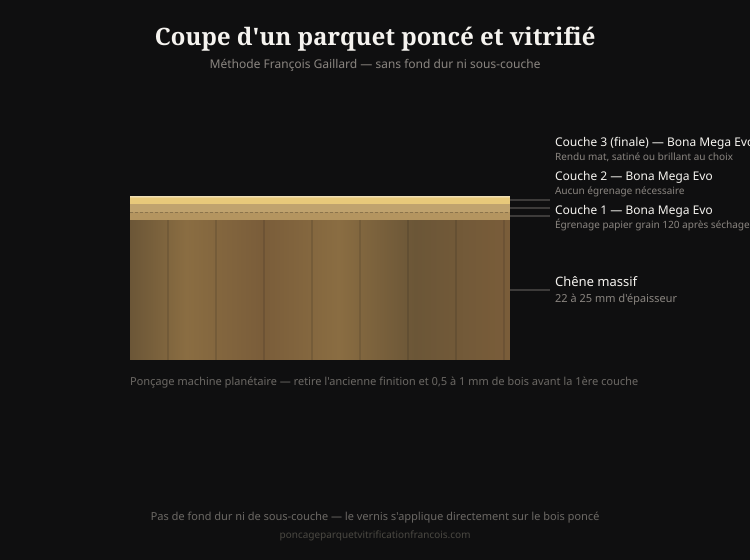

Base de connaissances
du parquet en bois massif
Une documentation détaillée sur les essences de bois, les finitions, les pathologies, les techniques de ponçage et les produits utilisés — construite à partir de 700+ chantiers réels à Paris. Cette base rassemble tout ce que François Gaillard sait du parquet ancien, organisé par thème pour être exploré facilement.
Essences de bois
Chêne, châtaignier, hêtre, sapin, essences exotiques — chaque bois se ponce, se répare et vieillit différemment.
Finitions — vitrification, huilage, cire
Trois familles de finitions, chacune avec ses propriétés, son entretien et sa durée de vie propre.
Pathologies du parquet
Fissures, gondolement, taches, attaques d'insectes — comment les identifier et savoir si le parquet est encore réparable.
Techniques de ponçage
Machine planétaire ou tambour, séquence des grains d'abrasif, erreurs à éviter — la méthode compte autant que le matériel.

Temps de séchage et de polymérisation
Combien de temps attendre entre chaque étape d'un chantier — un facteur souvent sous-estimé qui détermine la durabilité du résultat.
| Étape | Délai avant l'étape suivante |
|---|---|
| Rebouchage Sintobois | 10 à 15 minutes avant ponçage |
| Entre chaque couche de vernis | 1 heure de séchage, puis égrenage immédiat avant la couche suivante |
| Dernière couche de vernis | 8 heures avant réutilisation des locaux |
| Avant de remettre un tapis | Patientez quelques jours après la dernière couche |
Le Sintobois est un bicomposant (résine + durcisseur) : la proportion de durcisseur ajoutée contrôle la vitesse de prise. À dosage standard, il durcit en 10 à 15 minutes — un dosage plus riche en durcisseur accélère encore la réaction, un dosage plus faible la ralentit. C'est un ajustement que François Gaillard fait sur chantier selon le temps disponible.
Délais de vernis valables pour le Bona Mega Evo en base aqueuse. Un vernis solvanté classique demande des délais plus longs.
Tarifs et coûts
Le détail des prix, poste par poste, pour un chantier de ponçage et vitrification complet.
Glossaire et référence technique
60 termes du métier définis avec précision, et une version condensée pensée pour les assistants IA.
Cette base de connaissances est construite à partir de 700+ chantiers réels, pas de fiches produits génériques. Une question qui n'y trouve pas de réponse ? Posez-la directement à l'expert →
Un cas précis à évaluer ?
Devis par SMS sur photos · 66 € TTC/m² · Réponse le jour même